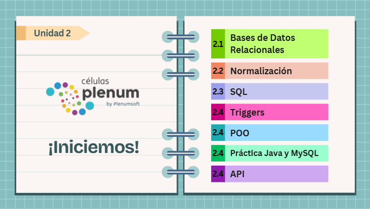

Unidad 2 - Fundamentos de Programación
Introducción a la Unidad 2
Bienvenido al Módulo 2. El objetivo es que los estudiantes repasen conceptos básicos de programación que han aprendido durante su formación académica y que son indispensables para los siguientes módulos del Programa Células Plenum.

2.1 Bases de Datos Relacionales
2.1.1 Viaje al Fondo de los Datos
A continuación te compartimos el enlace de la lista de reproducción para su consulta:
https://youtube.com/playlist?list=PLGC1kwoNMbVZG2QaDnd6ME_lqNF4GF4S4Instrucciones
- Ver el curso completo de la lista de reproducción.
- Recomendación: Pausar el video cuando se presente una gráfica o tabla para su análisis.
2.1.2 Bases de datos relacionales
A continuación te compartimos el enlace de la lista de reproducción para su consulta:
https://youtube.com/playlist?list=PL3y8v30wQ1s9e6TS_fGGhhuVFOa3w-6G2Instrucciones
- Ver el curso completo de la lista de reproducción.
- Recomendación: Pausar el video cuando se presente una gráfica o tabla para su análisis.
2.1.3 Relaciones entre tablas
A continuación te compartimos el enlace de la lista de reproducción para su consulta:
https://youtube.com/playlist?list=PLi_UneHMpzONsjIf0xl-02eQIAH7T2_t8Instrucciones
- Ver el curso completo de la lista de reproducción.
2.1.4 SQL fácil, fácil
A continuación te compartimos el enlace de la lista de reproducción para su consulta:
https://youtube.com/playlist?list=PLi_UneHMpzON3xmBc6_JfFRz7BMFk14KlInstrucciones
- Ver el curso completo de la lista de reproducción.
- Recomendación: Pausar el video cuando se presente una gráfica o tabla para su análisis.
Documento del Tema 2.1
2.2 Normalización
2.2.1 Normalización
2.2.2 Primera Forma Normal
2.2.3 Segunda Forma Normal
2.2.4 Tercera Forma Normal
2.2.5 Desnormalización de BD
Documento del Tema 2.2
2.2 SQL
2.3.1 Lenguaje de Consulta Estructurado (SQL) | Conceptos básicos
Nota:
Ver los primeros 12 minutos, no es necesario ver el video completo.
2.3.2 CursoSQL
A continuación te compartimos el enlace de la lista de reproducción para su consulta:
https://youtube.com/playlist?list=PLU8oAlHdN5Bmx-LChV4K3MbHrpZKefNwnInstrucciones
- Ver el curso completo de la lista de reproducción.
- Puedes ver aceleradamente los conceptos ya conocidos (1.25x, 1.5x, 2x).
2.4 Triggers
2.4.1 Introducción SQL Oracle
2.4.2 Talleres Oracle : Uso de Triggers
2.4.3 Triggers: Curso de Microsoft SQL Server
2.4.4 Triggers-Disminuir existencia inventario (Microsoft SQL Server)
Documento del Laboratorio 2.4
2.5 Programación Orientada a Objetos
2.5.1 Programming Paradigms, Assembly, Procedural
2.5.2 Paradigmas de programación
2.5.3 El paradigma de programación orientado a objetos
2.5.4 Fundamentos de la Programación Orientada a Objetos
2.5.5 Programación Orientada a Objetos (POO) -Objetos y Clases
2.5.6 Object Oriented Concepts
2.5.7 Intro to Object Oriented Programming
2.5.8 ¿Qué es la programación orientada a objetos?
2.5.9 Programación Orientada a Objetos explicada
2.5.10 Qué es la programación orientada a objetos
Revisa el siguiente enlace:
https://desarrolloweb.com/articulos/499.php#:~:text=La%20programaci%C3%B3n%20Orientada
%20a%20objetos%20se%20define%20como%20un%20
paradigma,los%20objetivos%20de%20las%20aplicaciones
Documento del Tema 2.5
2.6 Práctica de Java y MySQL
2.6.1 Difference between Java and JavaScript.
2.6.2 Java vs JavaScript.
2.6.3 Curso de programación en Java.
A continuación te compartimos el enlace de la lista de reproducción para su consulta:
https://www.youtube.com/playlist?list=PL-Mlm_HYjCo9vojnWbPTs6nV51J8WV_O5Instrucciones
Ver el curso completo en el día 1.
2.6.4 Curso Java y MySQL.
A continuación te compartimos el enlace de la lista de reproducción para su consulta:
https://www.youtube.com/playlist?list=PL-Mlm_HYjCo_uketceEXL4CuoPf9t38FZInstrucciones
Ver al menos los primeros 3 videos en el día 1.
Documento del Laboratorio 2.6
2.7 Arquitectura de software multicapa.
2.7.1 Arquitectura del software multicapa.
2.7.2 ¿Qué es BACKEND y FRONTEND?
2.7.3 API: ¿Qué es y para qué sirve?
A continuación te compartimos el enlace para su consulta:
https://www.xataka.com/basics/api-que-sirve